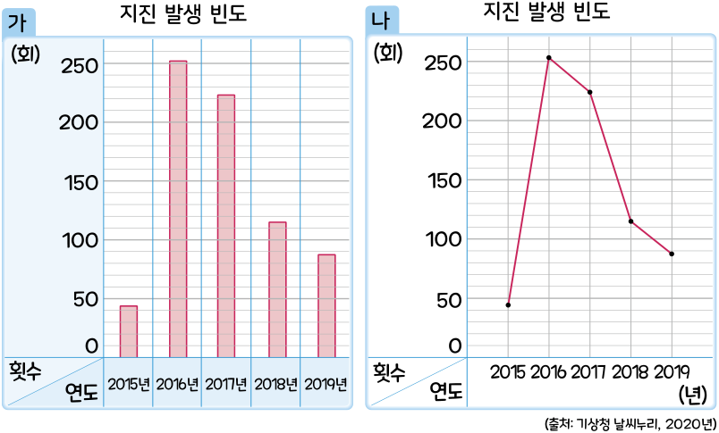

5. 자료와 꺾은선그래프
꺾은선그래프를 알아볼까요(1)
전개
수학
110
쪽
수학 익힘
78
쪽
우리나라의 지진 발생 빈도를 조사한 표를 두 그래프로 나타냈습니다. 두 그래프를 비교해 봅시다.

두 그래프의 같은 점과 다른 점은 각각 무엇인가요?
같은 점:
예
세로 눈금 한 칸의 크기가 같습니다.
가로는 연도를 나타내고 세로는 횟수를 나타냅니다.
다른 점:
예
가
그래프는 막대로 나타냈고
나
그래프는 선분으로 나타냈습니다.
지진 발생 빈도의 변화를 한눈에 알아보기 쉽게 나타내려면
가
와
나
중 어느 그래프로 나타내는 것이 좋을까요? 그 까닭은 무엇인가요?
예
나
그래프, 연속적으로 변화하는 양을 점으로 표시하고 그 점들을 선분으로 이어 그린 그래프이므로 지진 발생 빈도의 변화를 한눈에 알아볼 수 있습니다.